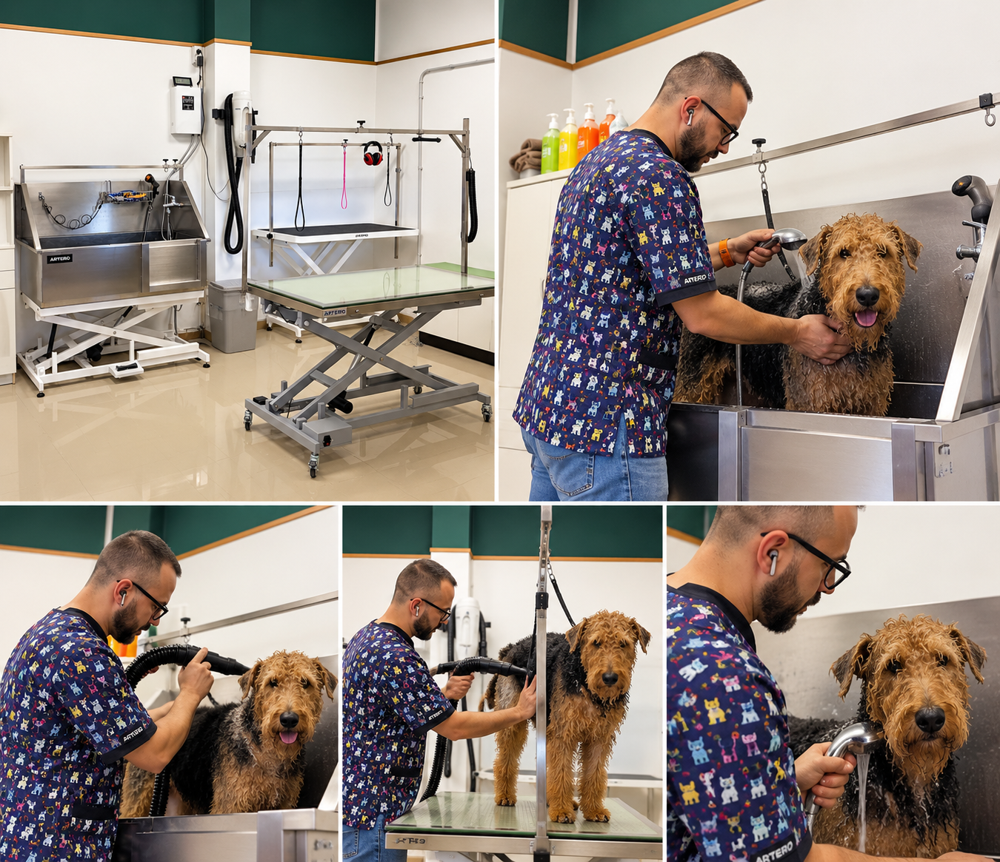
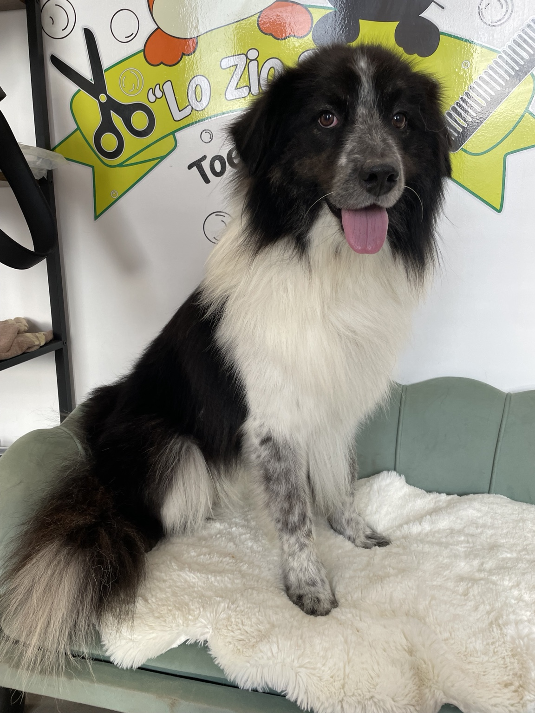
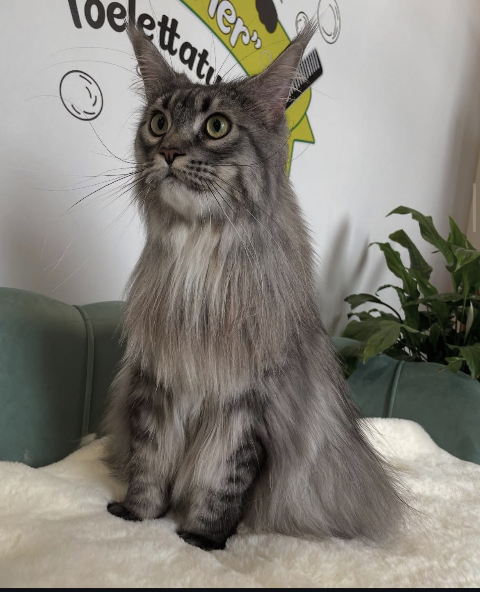
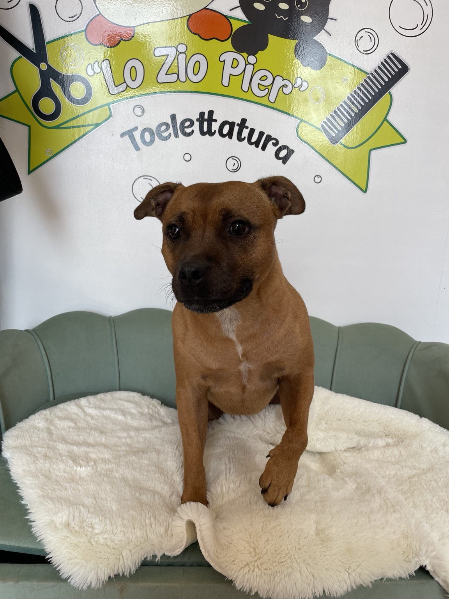
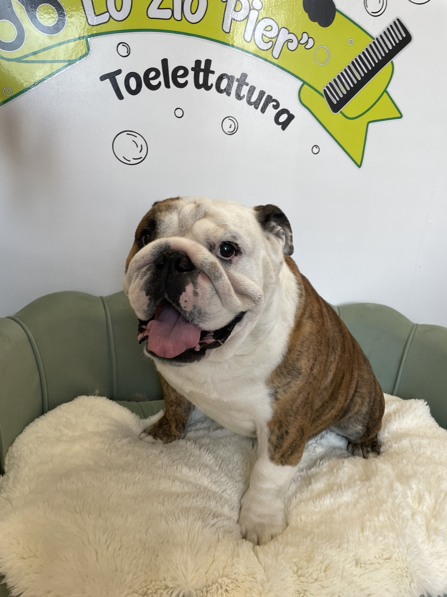
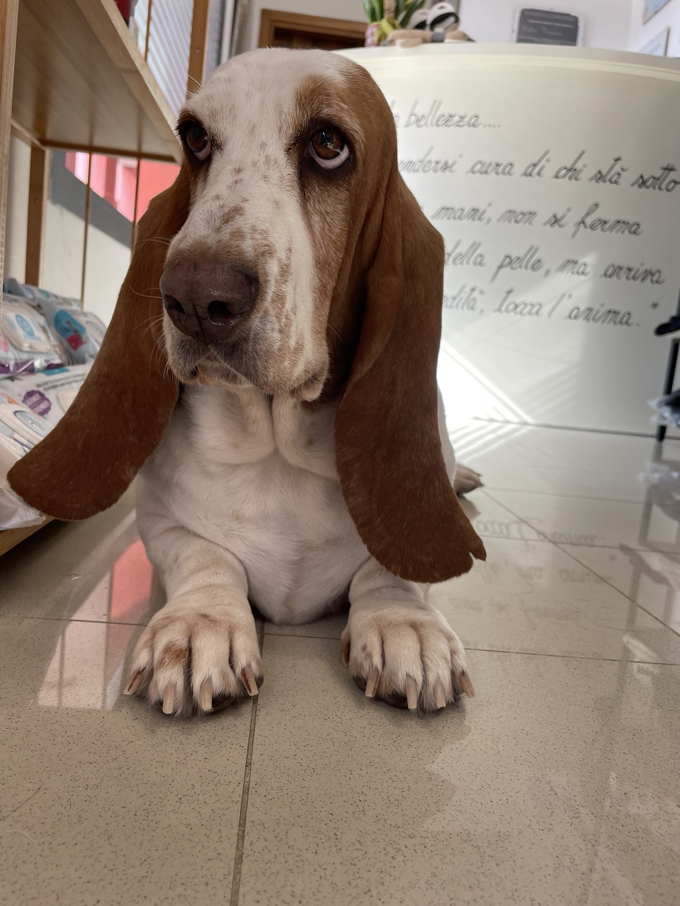
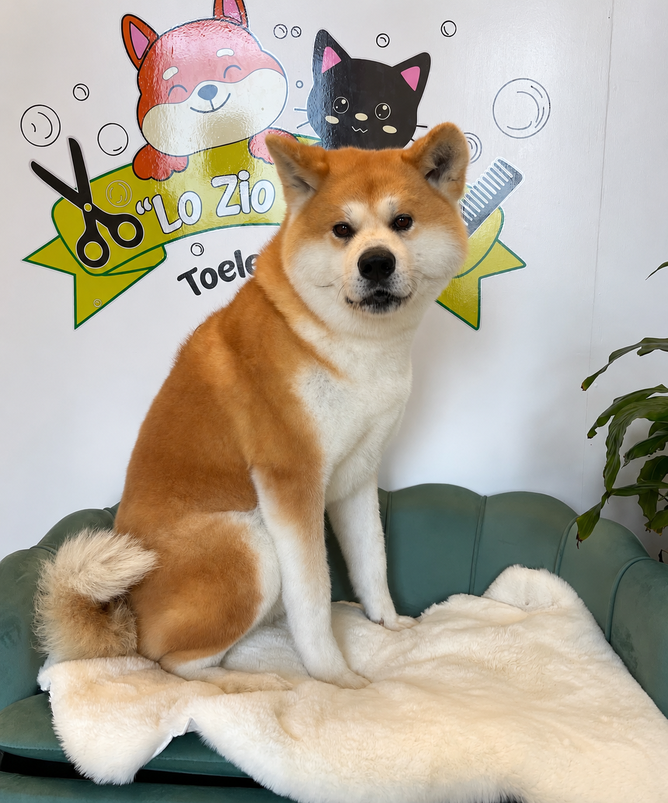
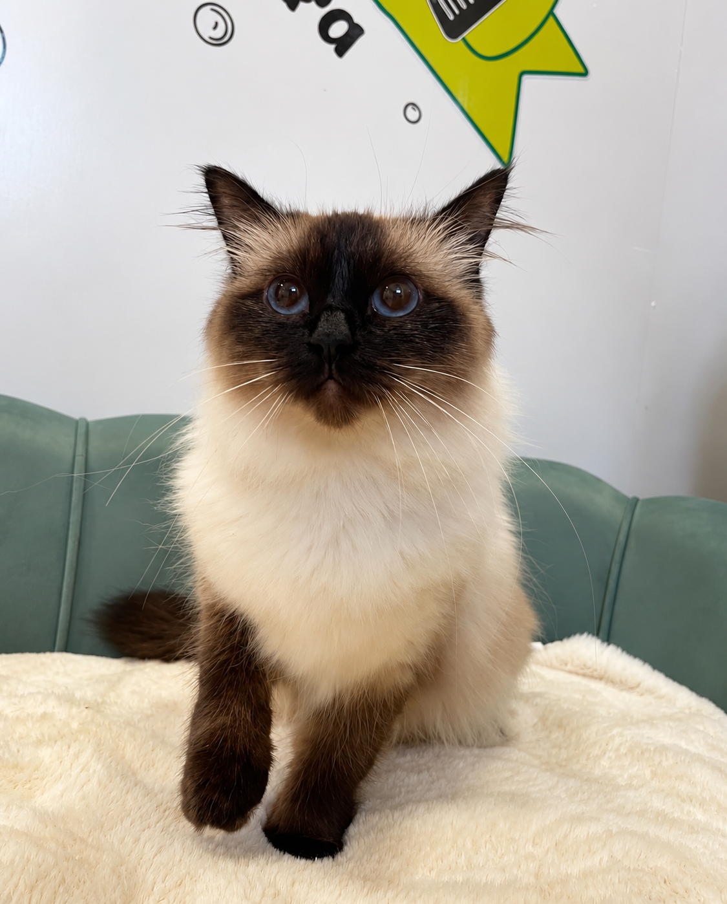

Toelettatura completa professionale
Cura, tecnica e attenzione al dettaglio, con rispetto e calma ad ogni cane.
Parliamone su WhatsApp ↗CASTELFRANCO VENETO · TREVISO
Cura, tecnica e attenzione al dettaglio,
con rispetto e calma ad ogni cane.

LA TOELETTATURA
Tre servizi dedicati alla cura del cane e del suo mantello. Scrivici per informazioni e prenotazioni.
Cura, tecnica e attenzione al dettaglio, con rispetto e calma ad ogni cane.
Parliamone su WhatsApp ↗Parliamo delle esigenze del tuo cane e della cura del suo mantello.
Chiedi informazioni ↗La cura continua anche a casa. Scopri i prodotti disponibili in negozio e chiedici informazioni.
Scopri i prodotti







COSMESI PROFESSIONALE
Ogni mantello ha esigenze diverse. Anche il trattamento deve esserlo.
Da Lo Zio Pier utilizziamo la linea professionale LACOVET pet beauty&care, scegliendo il trattamento più adatto alle caratteristiche della cute e del mantello di ogni cane e gatto.
Detersione specifica, cura del mantello e trattamenti mirati ci permettono di personalizzare ogni toelettatura in base alle reali necessità dell’animale.
“Non un prodotto qualsiasi per tutti, ma il trattamento più adatto al mantello che abbiamo davanti.”
ACQUA OZONIZZATA
Durante il lavaggio utilizziamo anche acqua ozonizzata. Grazie alle sue proprietà igienizzanti e alla sua azione antibatterica, contribuisce a una detersione accurata della cute e del mantello e completa il trattamento professionale scelto per ogni animale.
DOVE SIAMO
CONTATTI & PRENOTAZIONI
Per prenotare o chiedere informazioni, contattaci su WhatsApp o chiamaci.